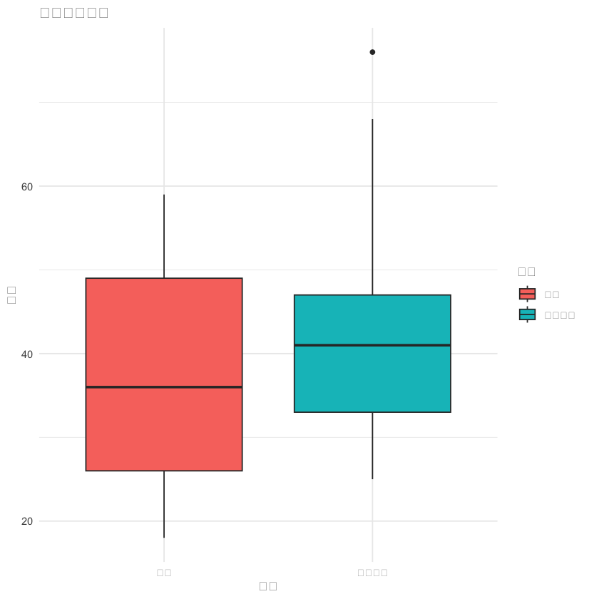
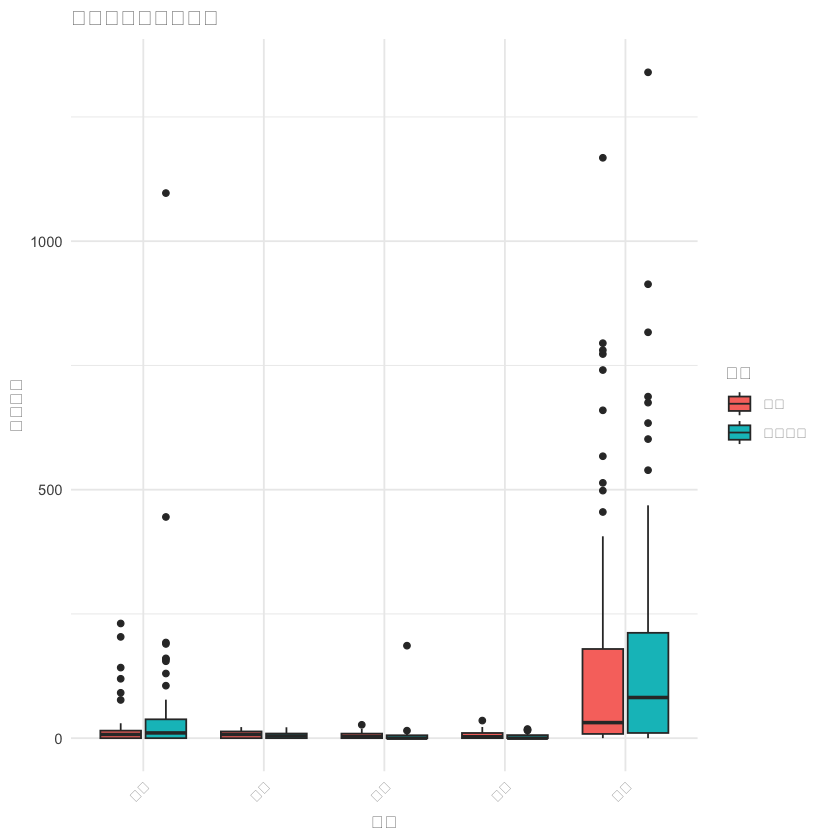
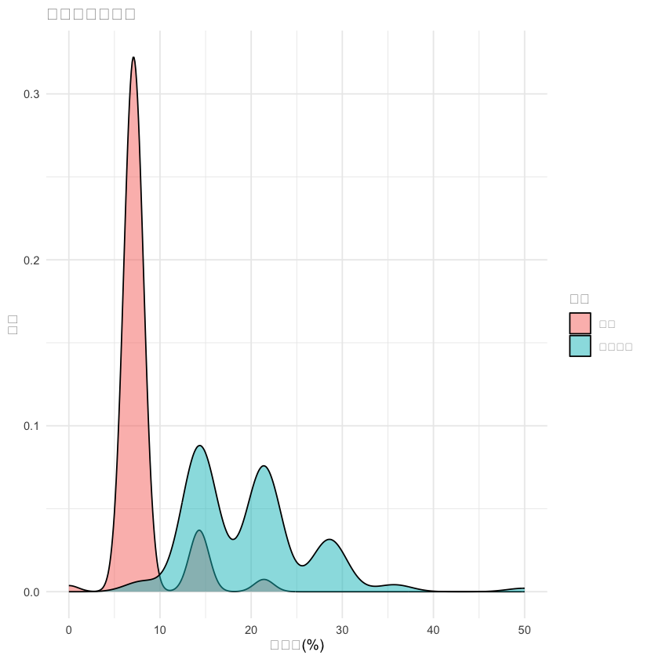
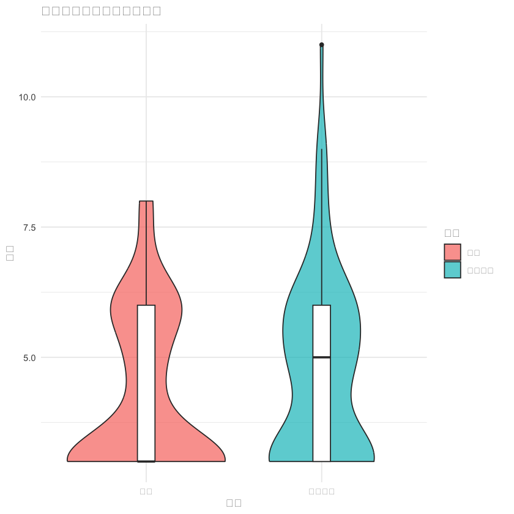
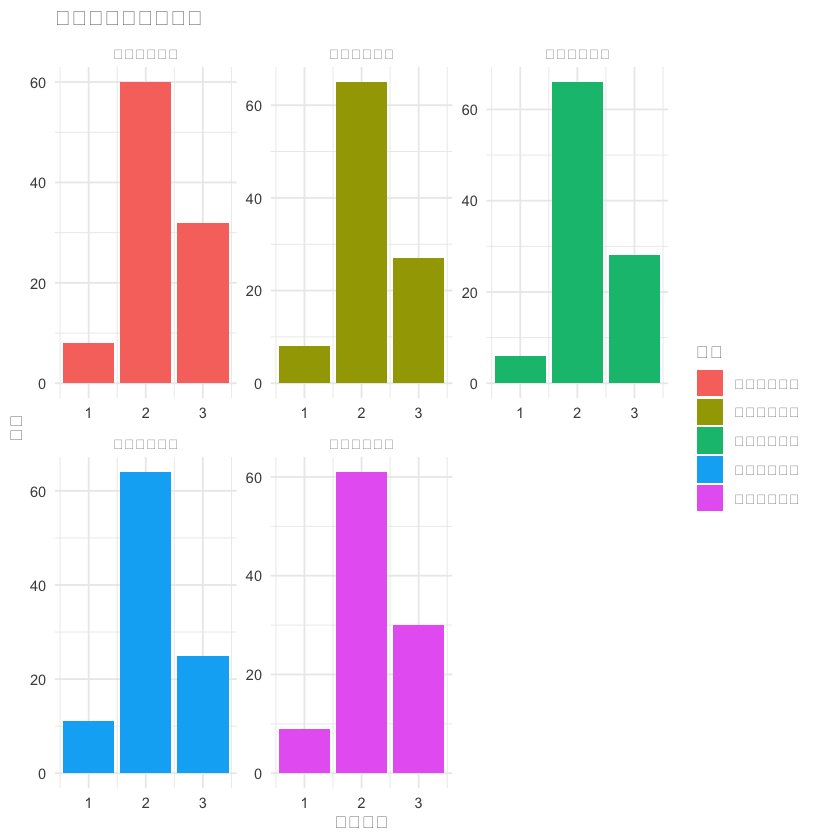

# 加载必要的包
library(readxl)
library(dplyr)
library(ggplot2)
library(tidyr)
library(corrplot)
library(caret)
library(pROC)
library(nortest)
# 1. 数据读取和清洗
# 读取慢性疲劳组数据
chronic_fatigue <- read_excel("/Users/wangguotao/Downloads/ISAR/food/信息汇总全_加阳性率+加权+二分类+3种食物加.xlsx", sheet = "慢性疲劳组")
# 读取健康组数据
healthy <- read_excel("/Users/wangguotao/Downloads/ISAR/food/信息汇总全_加阳性率+加权+二分类+3种食物加.xlsx", sheet = "健康组")
# 读取疲劳量表数据
fatigue_scale <- read_excel("疲劳量表.xls", sheet = "Sheet1")
# 数据清洗函数
clean_data <- function(df) {
# 处理缺失值和异常值
df[df == "--"] <- NA
df[df == ""] <- NA
# 转换数据类型
numeric_cols <- c(
"年龄", "身高", "体重", "牛肉", "鸡肉", "猪肉", "小麦", "大麦", "玉米",
"牛奶", "鸡蛋", "鳕鱼", "虾", "螃蟹", "大豆", "西红柿", "蘑菇",
"人连蛋白四参数结果", "人连蛋白直线结果", "阳性率(%)", "分类求和",
"连续求和", "分类加权", "连续加权", "三种食物分类加权评分"
)
for (col in numeric_cols) {
if (col %in% names(df)) {
df[[col]] <- as.numeric(df[[col]])
}
}
# 计算BMI
if (all(c("身高", "体重") %in% names(df))) {
df$BMI <- df$体重 / (df$身高 / 100)^2
}
return(df)
}
# 应用数据清洗
chronic_fatigue_clean <- clean_data(chronic_fatigue)
healthy_clean <- clean_data(healthy)
# 添加组别标识
chronic_fatigue_clean$组别 <- "慢性疲劳"
healthy_clean$组别 <- "健康"
# 合并数据集
combined_data <- bind_rows(chronic_fatigue_clean, healthy_clean)
# 2. 描述性统计分析
descriptive_analysis <- function(df) {
cat("=== 描述性统计分析 ===\n")
# 基本人口学特征
cat("\n1. 人口学特征:\n")
if ("性别" %in% names(df)) {
cat("性别分布:\n")
print(table(df$性别, df$组别))
}
if ("年龄" %in% names(df)) {
cat("\n年龄描述(按组别):\n")
print(aggregate(年龄 ~ 组别, df, function(x) {
c(
mean = mean(x, na.rm = TRUE),
sd = sd(x, na.rm = TRUE)
)
}))
}
# 食物过敏指标分析
food_cols <- c(
"牛肉", "鸡肉", "猪肉", "小麦", "大麦", "玉米", "牛奶", "鸡蛋",
"鳕鱼", "虾", "螃蟹", "大豆", "西红柿", "蘑菇"
)
food_data <- df[, food_cols]
food_data <- food_data[, sapply(food_data, is.numeric)]
cat("\n2. 食物过敏指标描述:\n")
food_summary <- do.call(rbind, lapply(names(food_data), function(col) {
data.frame(
食物 = col,
组别 = "总体",
均值 = mean(food_data[[col]], na.rm = TRUE),
标准差 = sd(food_data[[col]], na.rm = TRUE)
)
}))
print(food_summary)
return(df)
}
# 执行描述性分析
combined_data <- descriptive_analysis(combined_data)
# 3. 组间比较分析
group_comparison <- function(df) {
cat("\n=== 组间比较分析 ===\n")
# 连续变量比较
continuous_vars <- c(
"年龄", "身高", "体重", "BMI", "牛肉", "鸡肉", "猪肉", "小麦",
"大麦", "玉米", "牛奶", "鸡蛋", "鳕鱼", "虾", "螃蟹", "大豆",
"西红柿", "蘑菇", "人连蛋白四参数结果", "人连蛋白直线结果",
"阳性率(%)", "分类求和", "连续求和", "分类加权", "连续加权",
"三种食物分类加权评分"
)
results <- data.frame()
for (var in continuous_vars) {
if (var %in% names(df)) {
# 检查正态性
group1 <- df[df$组别 == "慢性疲劳", var]
group2 <- df[df$组别 == "健康", var]
if (length(na.omit(group1)) > 3 && length(na.omit(group2)) > 3) {
norm_test1 <- ad.test(na.omit(group1))
norm_test2 <- ad.test(na.omit(group2))
if (norm_test1$p.value > 0.05 && norm_test2$p.value > 0.05) {
# t检验
test_result <- t.test(df[[var]] ~ df$组别)
test_type <- "t检验"
} else {
# Mann-Whitney U检验
test_result <- wilcox.test(df[[var]] ~ df$组别)
test_type <- "Mann-Whitney"
}
results <- rbind(results, data.frame(
变量 = var,
检验方法 = test_type,
统计量 = ifelse(test_type == "t检验", test_result$statistic, test_result$statistic),
p值 = test_result$p.value,
慢性疲劳均值 = mean(group1, na.rm = TRUE),
健康组均值 = mean(group2, na.rm = TRUE)
))
}
}
}
print(results)
return(results)
}
# 执行组间比较
comparison_results <- group_comparison(combined_data)
# 4. 相关性分析
correlation_analysis <- function(df) {
cat("\n=== 相关性分析 ===\n")
# 选择数值型变量
numeric_vars <- df %>% select(where(is.numeric))
# 计算相关系数矩阵
cor_matrix <- cor(numeric_vars, use = "complete.obs")
# 可视化相关系数矩阵
corrplot(cor_matrix,
method = "color", type = "upper",
order = "hclust", tl.cex = 0.7, tl.col = "black"
)
# 疲劳评分与食物过敏的相关性
if ("阳性率(%)" %in% names(df)) {
fatigue_cor <- cor(df$`阳性率(%)`, df[, c("牛肉", "鸡肉", "猪肉", "牛奶", "鸡蛋")],
use = "complete.obs"
)
cat("\n阳性率与主要食物的相关性:\n")
print(fatigue_cor)
}
return(cor_matrix)
}
# 执行相关性分析
cor_matrix <- correlation_analysis(combined_data)
# 5. 逻辑回归分析
logistic_regression <- function(df) {
cat("\n=== 逻辑回归分析 ===\n")
# 准备数据
model_data <- df %>%
select(
组别, 年龄, 性别, BMI, 牛肉, 鸡肉, 猪肉, 牛奶, 鸡蛋,
`阳性率(%)`, `三种食物分类加权评分`
) %>%
na.omit()
# 转换因变量
model_data$组别_num <- ifelse(model_data$组别 == "慢性疲劳", 1, 0)
# 构建逻辑回归模型
model <- glm(
组别_num ~ 年龄 + BMI + 牛肉 + 鸡肉 + 猪肉 + 牛奶 + 鸡蛋 +
`阳性率(%)` + `三种食物分类加权评分`,
data = model_data, family = binomial()
)
# 模型摘要
cat("逻辑回归模型摘要:\n")
print(summary(model))
# 优势比
or <- exp(coef(model))
ci <- exp(confint(model))
or_results <- data.frame(
变量 = names(coef(model)),
优势比 = round(or, 3),
置信区间下限 = round(ci[, 1], 3),
置信区间上限 = round(ci[, 2], 3)
)
print(or_results)
return(model)
}
# 执行逻辑回归
logistic_model <- logistic_regression(combined_data)
# 6. 可视化分析
visualization_analysis <- function(df) {
cat("\n=== 生成可视化图表 ===\n")
# 1. 人口学特征比较
p1 <- ggplot(df, aes(x = 组别, y = 年龄, fill = 组别)) +
geom_boxplot() +
labs(title = "年龄分布比较", x = "组别", y = "年龄") +
theme_minimal()
# 2. 主要食物过敏原比较
food_data_long <- df %>%
select(组别, 牛肉, 鸡肉, 猪肉, 牛奶, 鸡蛋) %>%
pivot_longer(cols = -组别, names_to = "食物", values_to = "值")
p2 <- ggplot(food_data_long, aes(x = 食物, y = 值, fill = 组别)) +
geom_boxplot() +
labs(title = "主要食物过敏原比较", x = "食物", y = "过敏水平") +
theme_minimal() +
theme(axis.text.x = element_text(angle = 45, hjust = 1))
# 3. 阳性率分布
p3 <- ggplot(df, aes(x = `阳性率(%)`, fill = 组别)) +
geom_density(alpha = 0.5) +
labs(title = "阳性率分布比较", x = "阳性率(%)", y = "密度") +
theme_minimal()
# 4. 三种食物评分与组别的关系
p4 <- ggplot(df, aes(x = 组别, y = `三种食物分类加权评分`, fill = 组别)) +
geom_violin(alpha = 0.7) +
geom_boxplot(width = 0.1, fill = "white") +
labs(title = "三种食物分类加权评分比较", x = "组别", y = "评分") +
theme_minimal()
# 显示图表
print(p1)
print(p2)
print(p3)
print(p4)
# 保存图表
ggsave("年龄分布比较.png", p1, width = 8, height = 6)
ggsave("食物过敏原比较.png", p2, width = 10, height = 6)
ggsave("阳性率分布.png", p3, width = 8, height = 6)
ggsave("食物评分比较.png", p4, width = 8, height = 6)
}
# 执行可视化分析
visualization_analysis(combined_data)
# 7. 疲劳量表数据分析
analyze_fatigue_scale <- function(fatigue_df) {
cat("\n=== 疲劳量表数据分析 ===\n")
# 重命名列
colnames(fatigue_df) <- c(
"序号", "总体疲劳分数", "总体疲劳程度", "生理疲劳分数",
"生理疲劳程度", "活动减少分数", "活动减少程度",
"兴趣减少分数", "兴趣减少程度", "精神疲劳分数", "精神疲劳程度"
)
# 描述性统计
cat("疲劳量表描述性统计:\n")
fatigue_summary <- fatigue_df %>%
summarise(
平均总体疲劳分数 = mean(总体疲劳分数, na.rm = TRUE),
平均生理疲劳分数 = mean(生理疲劳分数, na.rm = TRUE),
平均活动减少分数 = mean(活动减少分数, na.rm = TRUE),
平均兴趣减少分数 = mean(兴趣减少分数, na.rm = TRUE),
平均精神疲劳分数 = mean(精神疲劳分数, na.rm = TRUE)
)
print(fatigue_summary)
# 疲劳程度分布
p5 <- fatigue_df %>%
select(总体疲劳程度, 生理疲劳程度, 活动减少程度, 兴趣减少程度, 精神疲劳程度) %>%
pivot_longer(everything(), names_to = "维度", values_to = "程度") %>%
ggplot(aes(x = 程度, fill = 维度)) +
geom_bar(position = "dodge") +
labs(title = "各维度疲劳程度分布", x = "疲劳程度", y = "人数") +
theme_minimal() +
facet_wrap(~维度, scales = "free")
print(p5)
ggsave("疲劳程度分布.png", p5, width = 12, height = 8)
return(fatigue_summary)
}
# 分析疲劳量表数据
fatigue_results <- analyze_fatigue_scale(fatigue_scale)
# 8. 生成报告
generate_report <- function(comparison_results, logistic_model, fatigue_results) {
cat("\n=== 分析报告摘要 ===\n")
# 显著差异的变量
significant_vars <- comparison_results[comparison_results$p值 < 0.05, ]
cat("1. 组间存在显著差异的变量 (p < 0.05):\n")
if (nrow(significant_vars) > 0) {
print(significant_vars[, c("变量", "p值", "慢性疲劳均值", "健康组均值")])
} else {
cat("未发现显著差异的变量\n")
}
# 逻辑回归结果总结
cat("\n2. 逻辑回归分析结果:\n")
model_summary <- summary(logistic_model)
significant_coefs <- coef(model_summary)[coef(model_summary)[, 4] < 0.05, ]
if (length(significant_coefs) > 0) {
print(significant_coefs)
} else {
cat("未发现显著的预测变量\n")
}
# 疲劳量表结果
cat("\n3. 疲劳量表分析结果:\n")
print(fatigue_results)
}
# 生成最终报告
generate_report(comparison_results, logistic_model, fatigue_results)
# 9. 保存结果
save_results <- function() {
# 保存清理后的数据
write.csv(combined_data, "清理后的合并数据.csv", row.names = FALSE)
write.csv(comparison_results, "组间比较结果.csv", row.names = FALSE)
# 保存重要结果
sink("分析结果摘要.txt")
generate_report(comparison_results, logistic_model, fatigue_results)
sink()
cat("分析完成！结果已保存到当前工作目录。\n")
}
# 保存所有结果
save_results()
Attaching package: ‘dplyr’
The following objects are masked from ‘package:stats’:
filter, lag
The following objects are masked from ‘package:base’:
intersect, setdiff, setequal, union
corrplot 0.95 loaded
Loading required package: lattice
Type 'citation("pROC")' for a citation.
Attaching package: ‘pROC’
The following objects are masked from ‘package:stats’:
cov, smooth, var
Warning message in clean_data(healthy):
“NAs introduced by coercion”=== 描述性统计分析 ===
1. 人口学特征:
性别分布:
健康
14项IgG食物过敏结果说明： 1.阴性<50U/ml 2.弱阳性50-100U/ml 3.阳性100-200U/ml 4.强阳性>200U/ml 0
女 48
男 52
慢性疲劳
14项IgG食物过敏结果说明： 1.阴性<50U/ml 2.弱阳性50-100U/ml 3.阳性100-200U/ml 4.强阳性>200U/ml 1
女 21
男 75
年龄描述(按组别):
组别 年龄.mean 年龄.sd
1 健康 36.77000 12.46397
2 慢性疲劳 41.06061 9.90755
2. 食物过敏指标描述:
食物 组别 均值 标准差
1 牛肉 总体 6.7205 6.510450
2 鸡肉 总体 4.4685 6.004484
3 猪肉 总体 5.2060 13.933495
4 小麦 总体 7.6130 15.588748
5 大麦 总体 4.4880 5.551029
6 玉米 总体 5.7100 6.524180
7 牛奶 总体 27.7700 90.473437
8 鸡蛋 总体 154.6106 226.279820
9 鳕鱼 总体 7.2510 15.800067
10 虾 总体 4.0225 5.326292
11 螃蟹 总体 5.3370 7.332171
12 大豆 总体 21.4155 87.525807
13 西红柿 总体 4.3815 6.226311
14 蘑菇 总体 7.7740 8.438255
=== 组间比较分析 ===
data frame with 0 columns and 0 rows
=== 相关性分析 ===
阳性率与主要食物的相关性:
牛肉 鸡肉 猪肉 牛奶 鸡蛋
[1,] -0.1136405 -0.1248766 -0.02814251 0.4888091 0.3102504
=== 逻辑回归分析 ===Warning message:
“glm.fit: algorithm did not converge”
Warning message:
“glm.fit: fitted probabilities numerically 0 or 1 occurred”逻辑回归模型摘要:
Call:
glm(formula = 组别_num ~ 年龄 + BMI + 牛肉 + 鸡肉 + 猪肉 +
牛奶 + 鸡蛋 + `阳性率(%)` + 三种食物分类加权评分,
family = binomial(), data = model_data)
Coefficients:
Estimate Std. Error z value Pr(>|z|)
(Intercept) 308.5762 28450.9373 0.011 0.991
年龄 24.0259 1161.3493 0.021 0.983
BMI -76.8906 3667.9453 -0.021 0.983
牛肉 -48.2939 2315.6789 -0.021 0.983
鸡肉 -14.8404 747.2800 -0.020 0.984
猪肉 7.0706 372.1934 0.019 0.985
牛奶 -0.9237 53.4565 -0.017 0.986
鸡蛋 2.5539 120.7453 0.021 0.983
`阳性率(%)` 268.6173 12694.8859 0.021 0.983
三种食物分类加权评分 -679.9242 32177.5463 -0.021 0.983
(Dispersion parameter for binomial family taken to be 1)
Null deviance: 2.6609e+02 on 191 degrees of freedom
Residual deviance: 1.3248e-06 on 182 degrees of freedom
AIC: 20
Number of Fisher Scoring iterations: 25
Waiting for profiling to be done...
Warning message:
“glm.fit: fitted probabilities numerically 0 or 1 occurred”
Warning message:
“glm.fit: fitted probabilities numerically 0 or 1 occurred”
Warning message:
“glm.fit: fitted probabilities numerically 0 or 1 occurred”
Warning message:
“glm.fit: fitted probabilities numerically 0 or 1 occurred”
Warning message:
“glm.fit: fitted probabilities numerically 0 or 1 occurred”
Warning message:
“glm.fit: fitted probabilities numerically 0 or 1 occurred”
Warning message:
“glm.fit: fitted probabilities numerically 0 or 1 occurred”
Warning message:
“glm.fit: fitted probabilities numerically 0 or 1 occurred”
Warning message:
“glm.fit: fitted probabilities numerically 0 or 1 occurred”
Warning message:
“glm.fit: fitted probabilities numerically 0 or 1 occurred”
Warning message:
“glm.fit: fitted probabilities numerically 0 or 1 occurred”
Warning message:
“glm.fit: fitted probabilities numerically 0 or 1 occurred”
Warning message:
“glm.fit: fitted probabilities numerically 0 or 1 occurred”
Warning message:
“glm.fit: fitted probabilities numerically 0 or 1 occurred”
Warning message:
“glm.fit: fitted probabilities numerically 0 or 1 occurred”
Warning message:
“glm.fit: fitted probabilities numerically 0 or 1 occurred”
Warning message:
“glm.fit: fitted probabilities numerically 0 or 1 occurred”
Warning message:
“glm.fit: fitted probabilities numerically 0 or 1 occurred”
Warning message:
“glm.fit: fitted probabilities numerically 0 or 1 occurred”
Warning message:
“glm.fit: fitted probabilities numerically 0 or 1 occurred”
Warning message:
“glm.fit: fitted probabilities numerically 0 or 1 occurred”
Warning message:
“glm.fit: fitted probabilities numerically 0 or 1 occurred”
Warning message:
“glm.fit: fitted probabilities numerically 0 or 1 occurred”
Warning message:
“glm.fit: fitted probabilities numerically 0 or 1 occurred”
Warning message:
“glm.fit: fitted probabilities numerically 0 or 1 occurred”
Warning message:
“glm.fit: fitted probabilities numerically 0 or 1 occurred” 变量 优势比 置信区间下限
(Intercept) (Intercept) 1.030211e+134 0.000
年龄 年龄 2.718288e+10 0.000
BMI BMI 0.000000e+00 0.000
牛肉 牛肉 0.000000e+00 0.000
鸡肉 鸡肉 0.000000e+00 0.000
猪肉 猪肉 1.176837e+03 0.000
牛奶 牛奶 3.970000e-01 0.011
鸡蛋 鸡蛋 1.285700e+01 0.000
`阳性率(%)` `阳性率(%)` 4.560532e+116 Inf
三种食物分类加权评分 三种食物分类加权评分 0.000000e+00 0.000
置信区间上限
(Intercept) Inf
年龄 1.591997e+44
BMI 3.662570e+207
牛肉 7.040344e+126
鸡肉 1.556012e+34
猪肉 9.899439e+11
牛奶 1.394800e+01
鸡蛋 1.958067e+34
`阳性率(%)` Inf
三种食物分类加权评分 Inf
=== 生成可视化图表 ===Warning message: “Removed 3 rows containing non-finite outside the scale range (`stat_boxplot()`).”

Warning message: “Removed 11 rows containing non-finite outside the scale range (`stat_boxplot()`).”

Warning message: “Removed 2 rows containing non-finite outside the scale range (`stat_density()`).”

Warning message: “Removed 2 rows containing non-finite outside the scale range (`stat_ydensity()`).” Warning message: “Removed 2 rows containing non-finite outside the scale range (`stat_boxplot()`).” Warning message: “Removed 3 rows containing non-finite outside the scale range (`stat_boxplot()`).” Warning message: “Removed 11 rows containing non-finite outside the scale range (`stat_boxplot()`).” Warning message: “Removed 2 rows containing non-finite outside the scale range (`stat_density()`).” Warning message: “Removed 2 rows containing non-finite outside the scale range (`stat_ydensity()`).” Warning message: “Removed 2 rows containing non-finite outside the scale range (`stat_boxplot()`).”

=== 疲劳量表数据分析 === 疲劳量表描述性统计: # A tibble: 1 × 5 平均总体疲劳分数 平均生理疲劳分数 平均活动减少分数 平均兴趣减少分数 <dbl> <dbl> <dbl> <dbl> 1 13.8 13.6 13.8 14.0 # ℹ 1 more variable: 平均精神疲劳分数 <dbl>
Warning message: “Removed 10 rows containing non-finite outside the scale range (`stat_count()`).” Warning message: “Removed 10 rows containing non-finite outside the scale range (`stat_count()`).”

=== 分析报告摘要 === 1. 组间存在显著差异的变量 (p < 0.05): 未发现显著差异的变量 2. 逻辑回归分析结果: 未发现显著的预测变量 3. 疲劳量表分析结果: # A tibble: 1 × 5 平均总体疲劳分数 平均生理疲劳分数 平均活动减少分数 平均兴趣减少分数 <dbl> <dbl> <dbl> <dbl> 1 13.8 13.6 13.8 14.0 # ℹ 1 more variable: 平均精神疲劳分数 <dbl> 分析完成！结果已保存到当前工作目录。
